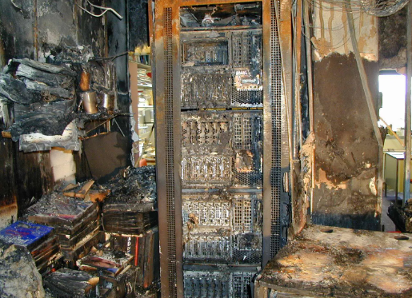

Portabilität
Wohl der Hauptaugenmerk dieser Spielekonsole! Man braucht nicht immer ein drittes Medium,
wie einen Monitor, um dieses Gerät zu bedienen. Einfach aus der Docker-Station herausnehmen
und weiterspielen! Nintendo fusioniert hier die Fähigkeiten ihrer Heimkonsolen, wie die Wii,
mit Handheld-Geräten, wie das DS, in eines zusammen, wodurch für gemeinsame Spieleabende,
sowie Unterhaltung für zwischendurch gleichzeitig gesorgt werden kann.

Spiele-Repertoire
Da Nintendo natürlich nicht nur Konsolen, sondern auch eigene ikonische Spiele entwickelt,
erhält man durch die Switch erstmals Zugriff auf diese Spiele. Oder wohl eher Zugriff auf
den Kauf dieser Spiele, zumindest bis ein neues Nintendo-Gerät auf den Markt kommt. Nintendo
ist ja leider keine kleine Indie-Firma mehr. Wenn man aber darüber (und über die unzähligen
Remasters schon fast dekadealter Spiele) hinwegschaut, hat man nun nach einigen Jahren schon
relativ zahlreiche Klassiker erhalten, zwischen welchen man wählen kann. Ob Mario, Zelda,
Pokémon oder Sammlungen alter Retrogames, an Franchise-Spielen wurde ausgesorgt. Um
Multiplayer-Funktionen zu nutzen, wie in Mario Kart 8 Deluxe beispielsweise, wird jedoch noch
ein kostenpflichtiges Abo benötigt. Wer aber nun denkt, dass die Online-Performance dadurch
umso hochwertiger ist, da sich Nintendo vielleicht höhere Kapazitäten leisten kann, irrt
jedoch leider.

Performance
Dedizierte Server und allgemeines schlechtes Online-Management einer Firma wie Nintendo sorgen
für Spieler schon lange für Kopfschmerzen, weshalb sich viele wohler in Singleplayer-Games fühlen
und darauf beim Kauf auch das Hauptaugenmerk legen. Wie die Switch da abschneidet kommt auf das
Spiel und den Spieler selbst an. Manche geben sich mit FPS-Drops auf unter 30 im Jahre 2024 in AAA-Spielen,
wie The Legend of Zelda: Tears of the Kingdom (ja, ein NINTENDOEIGENES Spiel), zufrieden, andere
eher weniger. Es hapert an Optimierung von Spielen gegenüber der Switch, was aber nicht
verwunderlich ist, wenn Aussehen und Umfang der Software immer besser wird, aber die Switch mit
Hardwareelementen aus dem Jahre 2015 und absteigend arbeiten muss. Doch selbst in den ersten Jahren
nach Switch-Release gab es schon Performance-Beschwerden, vor allem bei nintendofremden Produkten, was
natürlich das Konsolen Master-Race in diesem Aspekt für Nintendo etwas ins Schwanken gebracht hat.
Aber historisch gesehen konnten die Hardwareprodukte des japanischen Herstellers technisch natürlich
seit der Jahrtausendwende noch nie wirklich mit Sonys Playstation oder Microsofts XBox mithalten.
Es gab zwar schon Leaks, dass vor allem die Performance der Switch in der Dockerstation beim
Nachfolger stark verbessert werden soll, doch inwiefern solche Gerüchte stimmen, werden wir wohl erst in
Monaten oder sogar erst Jahren erfahren, wenn die nächste Konsole des Spielgiganten auf den Markt kommt.

Feature 4
Beschreibung des vierten Features...